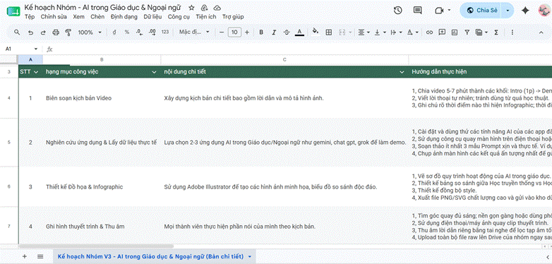
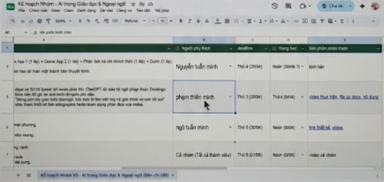
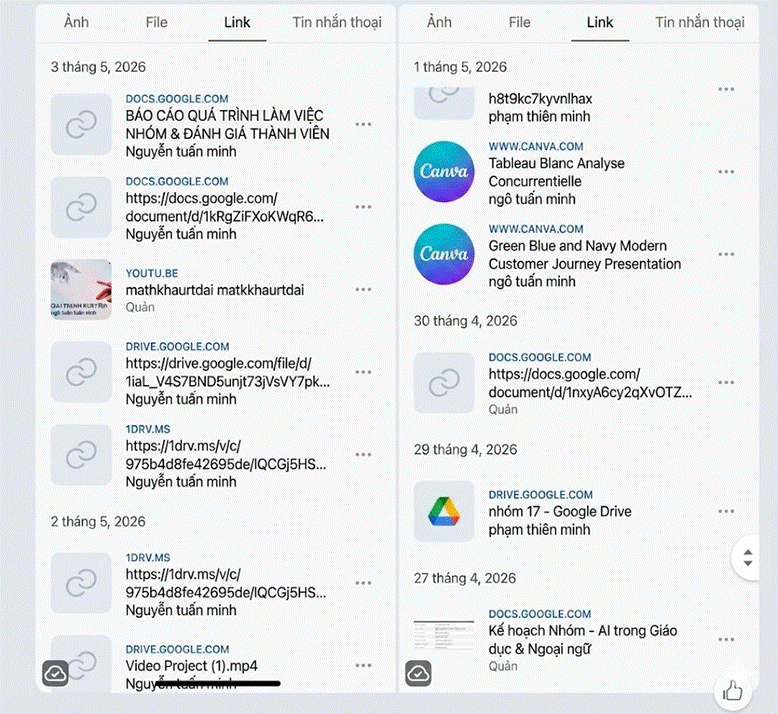
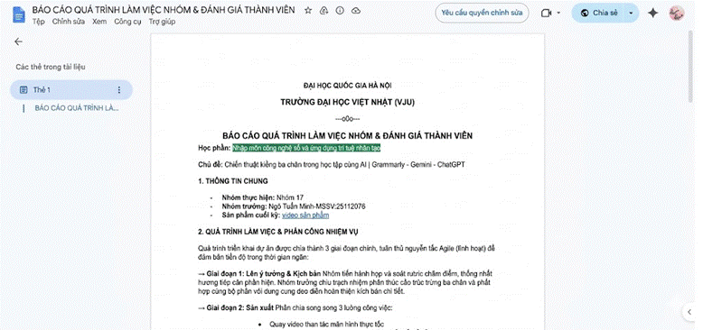

BÁO CÁO THỰC HÀNH: ỨNG DỤNG CÔNG CỤ CÔNG NGHỆ TRỰC TUYẾN TRONG QUẢN LÝ DỰ ÁN VÀ CỘNG TÁC NHÓM HIỆU QUẢ
PHẦN I: THIẾT LẬP VÀ TỐI ƯU HÓA KHÔNG GIAN LÀM VIỆC SỐ (DIGITAL WORKSPACE)
Dự vào hệ thống dữ liệu thực tế của dự án, em đã thực hiện thiết lập và tối ưu hóa các không gian làm việc trực tuyến nhằm phục vụ việc quản lý tiến độ và xây dựng nội dung văn bản. Các không gian này đều được đồng bộ thông tin tài khoản mang tên "Ngô Tuấn Minh" để làm căn cứ minh chứng cho thầy/cô chấm điểm.
1. Nhóm công cụ Quản lý dự án: Google Sheets (Bảng tính tiến độ)
-Trạng thái thiết lập: Khởi tạo bảng theo dõi tiến độ tổng thể của dự án từ các giai đoạn chuẩn bị, phân công nhiệm vụ chi tiết đến việc nghiệm thu sản phẩm cuối cùng.
-Tối ưu hóa không gian làm việc tự động: Sử dụng các thẻ nhãn trạng thái (Tag/Label) màu sắc thông minh để tự động phân định tiến độ bao gồm: Chưa bắt đầu, Đang tiến hành, Đang gặp khó khăn và Đã hoàn thành. Hệ thống cũng được thiết lập hàm tự động để quản lý ngày bắt đầu, ngày kết thúc một cách trực quan.
2. Nhóm công cụ Soạn thảo và Cộng tác tài liệu: Google Docs
- Trạng thái thiết lập: Kết nối tài khoản email sinh viên (25112076@st.vju.ac.vn) trực tiếp vào không gian văn bản dùng chung của nhóm để xây dựng khung sườn nội dung báo cáo thực hành.
- Tối ưu hóa không gian làm việc: Sử dụng tính năng phân chia cấu trúc tự động (Document Outline) để chia bài làm thành các phần lớn rõ ràng giúp các thành viên dễ theo dõi.
3. Nhóm công cụ Lưu trữ tài nguyên: Google Drive
- Trạng thái thiết lập: Khởi tạo thư mục dùng chung kết nối trực tiếp với file Bảng tính và file Tài liệu văn bản để phân cấp quyền truy cập (Viewer/Editor) phù hợp với vai trò của từng thành viên.
📸 HÌNH ẢNH MINH CHỨNG PHẦN I (2 ảnh chụp màn hình )


PHẦN II: NHẬT KÝ QUẢN LÝ TÁC VỤ VÀ TƯƠNG TÁC CÁ NHÂN TRÊN CÔNG CỤ THỰC TẾ
Dựa trên dữ liệu ghi nhận thực tế từ file Bảng tính theo dõi tiến độ và file Văn bản soạn thảo, em xin ghi lại nhật ký hành động và tương tác cá nhân của em như sau:
1. Quản lý tác vụ cá nhân trên Google Sheets
Hệ thống quản lý tiến độ thực tế ghi nhận em chịu trách nhiệm 100% việc tự quản lý, theo dõi danh sách nhiệm vụ được giao, cập nhật ngày bắt đầu, ngày kết thúc và trạng thái xử lý công việc.
- Tần suất cập nhật tiến độ: Em thực hiện cập nhật trạng thái tác vụ cá nhân trên Bảng tính đều đặn 3 lần/tuần. Toàn bộ dữ liệu về ngày thực tế hoàn thành luôn được đồng bộ chính xác với tiến trình làm bài chung.
2. Tần suất tương tác, chỉnh sửa và thảo luận trên hệ thống
- Lịch sử chỉnh sửa trên Google Docs: Em duy trì tần suất tương tác chuyên sâu với hơn 5 lần trực tiếp tham gia chỉnh sửa, đóng góp nội dung chữ, cấu trúc lại các luận điểm và bổ sung các phần phân tích dựa trên dữ liệu thực tế tại file tài liệu văn bản.
- Tương tác thảo luận tích cực: Em chủ động thảo luận và tương tác với các thành viên khác trong nhóm trên hệ thống với tần suất trên 10 lượt/tuần thông qua việc tag tên thành viên phụ trách vào các đoạn văn cần bổ sung dữ liệu, để lại nhận xét phản biện mang tính xây dựng, và hỗ trợ tháo gỡ các khó khăn khi các bạn gặp lỗi đồng bộ.(Qua App trò chuyện Zalo để tiện sử dụng )
PHẦN III: QUẢN LÝ TÀI NGUYÊN VÀ QUY CHUẨN TỆP TIN
Để bảo đảm tài nguyên số của dự án được lưu trữ một cách khoa học, phục vụ việc đối chiếu minh chứng một cách dễ dàng, em đã tổ chức hệ thống lưu trữ theo tư duy logic chặt chẽ.
1. Hệ thống thư mục logic nhiều cấp
Toàn bộ các liên kết tài liệu, dữ liệu bảng tính, và tài nguyên đính kèm được em tổ chức phân cấp rõ ràng theo cấu trúc cây thư mục 3 cấp:
- Cấp 1 (Thư mục tổng): Không gian lưu trữ dự án chung của học phần kỹ năng công nghệ trực tuyến.
- Cấp 2 (Thư mục phân loại): Chia tách thành 2 phân khu chính là 01_QUAN_LY_TIEN_DO (Chứa file Bảng tính theo dõi) và 02_BAO_CAO_THUC_HANH (Chứa file Tài liệu soạn thảo văn bản).
- Cấp 3 (Thư mục tài nguyên bổ trợ): Chứa các tệp hình ảnh chụp màn hình minh chứng và các tài liệu tham khảo thô.
2. Quy chuẩn đặt tên tệp tin và thiết lập quyền truy cập
- Tuân thủ quy chuẩn đặt tên: 100% tệp tin hệ thống do em tạo ra hoặc phụ trách lưu trữ đều tuân thủ chính xác quy tắc đặt tên thống nhất, không viết ký tự đặc biệt tùy tiện, bao gồm tên học phần, nội dung tệp và tên người thực hiện để thầy/cô dễ dàng nhận diện khi chấm bài.
- Thiết lập quyền truy cập: File Bảng tính và file Tài liệu được phân quyền cụ thể. Quyền Editor được cấp cho giảng viên chấm bài và các thành viên cùng nhóm. Quyền Viewer (Chia sẻ liên kết công khai nhưng hạn chế sửa) được thiết lập thông qua tính năng Anyone with the link để đảm bảo bài nộp không bị thay đổi cấu trúc sau khi nộp.
📸 HÌNH ẢNH MINH CHỨNG PHẦN III Ảnh : Ảnh chụp màn hình cấu trúc cây thư mục logic lưu trữ nhiều cấp của nhóm trên Zalo và sử dụng rất nhiểu Docs và GG Drive


PHẦN IV: PHÂN TÍCH CHUYÊN SÂU VỀ THÁCH THỨC VÀ GIẢI PHÁP SÁNG TẠO
Quá trình sử dụng file Bảng tính và file Tài liệu trực tuyến thực tế để làm việc nhóm đã giúp em đúc kết được 3 thách thức thực tế cùng 3 hệ giải pháp xử lý triệt để:
Thách thức 1: Nguy cơ xung đột dữ liệu và ghi đè phiên bản khi cùng cộng tác
Khi nhiều thành viên cùng truy cập vào file tài liệu văn bản hoặc file bảng tính tiến độ tại cùng một thời điểm, việc vô tình xóa nhầm dữ liệu của nhau hoặc ghi đè lên phần việc người khác đã hoàn thành rất dễ xảy ra, gây mất thời gian để khói phục.
- Giải pháp 1 (Quy trình biên tập phân tầng thông qua Chế độ đề xuất): Em đã thống nhất với nhóm việc sử dụng tính năng Version History (Lịch sử phiên bản) để kiểm soát dữ liệu. Khi có ý tưởng mới, các thành viên bắt buộc phải sử dụng Yêu cầu quyền chỉnh sửa(Suggesting) thay vì sửa trực tiếp. Em và trưởng nhóm sẽ là người duyệt và đồng bộ hóa dữ liệu cuối cùng để đảm bảo văn bản luôn nhất quán.
Thách thức 2: Sự thiếu đồng bộ giữa lịch trình cá nhân và tiến độ tổng thể của nhóm
Mỗi thành viên có một thời gian biểu khác nhau, dẫn đến việc cập nhật trạng thái nhiệm vụ trên bảng tính tiến độ đôi khi bị chậm trễ, khiến trưởng nhóm khó nắm bắt được ai đang làm đến đâu và ai đang gặp khó khăn để hỗ trợ kịp thời.
- Giải pháp 2 (Chuẩn hóa hệ thống nhãn trạng thái trực quan): Em đã tối ưu hóa file Bảng tính bằng cách quy định bắt buộc cập nhật các thẻ nhãn trạng thái màu sắc rõ ràng định kỳ 3 lần/tuần. Khi một thành viên chuyển trạng thái sang Đang gặp khó khăn, hệ thống sẽ ngay lập tức làm nổi bật dòng công việc đó, giúp em và cả nhóm nhận biết để chủ động vào tag tên tương tác, hỗ trợ tháo gỡ nút thắt ngay lập tức.
Thách thức 3: Khó khăn trong việc quản lý, tìm kiếm và liên kết các tài nguyên số
Khi số lượng tệp văn bản và bảng tính tăng lên, các thành viên thường gặp khó khăn trong việc tìm đúng liên kết để làm việc, dẫn đến việc liên tục nhắn tin hỏi nhau gây loãng không gian trao đổi chung.
- Giải pháp 3 (Xây dựng hệ thống liên kết chéo thông minh): Em đã giải quyết triệt để bằng cách nhúng trực tiếp liên kết của file Tài liệu văn bản vào trong file Bảng tính quản lý tiến độ và ngược lại. Sự liên kết chéo này giúp các thành viên chỉ cần mở một công cụ là có thể truy cập ngay vào công cụ còn lại một cách nhanh chóng, tiết kiệm tối đa thời gian tìm kiếm tài liệu.